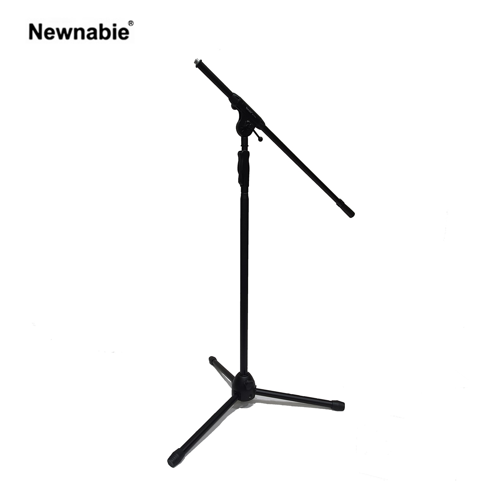

Newnabie NB-753S는 Boyong 공식 카탈로그의 BY-753 원형을 기반으로, 한 손으로 높이를 조절할 수 있는 원터치 클러치(One-Hand Adjustable) 구조의 헤비듀티 붐 마이크 스탠드입니다. 상단의 T-Bar는 접히지 않는 일체형(S 타입)으로 견고하며, Φ28 mm의 두꺼운 메인 폴이 장시간 라이브·보컬 운용에서도 흔들림 없이 안정적인 지지력을 제공합니다.

한 손 조작으로 높이 조절이 가능한 Boyong BY-753 기반의 헤비듀티 붐 마이크 스탠드. 일체형 T-Bar와 두꺼운 Φ28 mm 메인 폴로 공연·보컬·인터뷰 현장에서 요구되는 안정성을 확보합니다.
NB-753S는 Boyong(博洋) 공식 카탈로그상 BY-753 원형을 수입·유통하는 모델로, 스탠드 메인 폴 중간에 위치한 원터치 클러치 그립을 한 손으로 쥐고 돌리기만 하면 높이를 자유롭게 조절할 수 있습니다. 조작 속도가 빠르고 힘이 덜 들기 때문에 리허설·공연 전환 상황에서도 신속한 세팅이 가능합니다.
상단 T-Bar는 반으로 접히지 않는 일체형(S 타입) 구조로, 붐 길이 600–1000 mm 범위에서 텔레스코핑 방식으로 연장됩니다. 접이식 관절이 없기 때문에 장시간 사용에도 마이크 각도가 변형되지 않고 안정적으로 유지됩니다. Φ28 mm 두꺼운 메인 폴과 강화 트라이포드 베이스(Φ20 mm)로 헤비듀티 등급의 견고함을 제공하며, 본체 중량 3.6 kg으로 설치·이동이 부담스럽지 않습니다.
제조사(Boyong) BY-753 공식 사양이 강조하는 핵심 포인트입니다.
제조사 Boyong(博洋) 공식 카탈로그 BY-753 기준 사양입니다.
| 모델명 | NB-753S (제조사 원형: Boyong BY-753) |
|---|---|
| 타입 | Heavy-Duty Boom Mic Stand (One-Hand Clutch · S 타입) |
| Height | 1100 – 1750 mm |
| Boom (T-Bar) Length | 600 – 1000 mm (텔레스코핑 · 일체형) |
| Main Pole Diameter | Φ28 mm |
| Leg Tube Diameter | Φ20 mm |
| Material | Steel (Black Powder Coated) |
| 조작 방식 | 원터치 One-Hand 클러치 |
| Net Weight | 3.6 kg |
| 권장소비자가 | 72,600 원 / 개 (VAT 포함) |
※ 본 사양은 제조사 Boyong(博洋) 공식 카탈로그 BY-753 기재 사항을 기준으로 정리되었습니다. 단가는 수입원(현대에이브이씨) 2026-01-01 스탠드 가격표 기준 권장소비자가(VAT 포함)입니다.
프로페셔널 라이브 보컬·인터뷰·드럼 마이킹 등 헤비듀티급 안정성이 필요한 현장에 적합합니다.